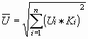
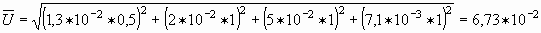
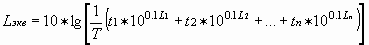

Приложение 4
(рекомендуемое)
РАСЧЕТ КОРРЕКТИРОВАННЫХ И ЭКВИВАЛЕНТНЫХ КОРРЕКТИРОВАННЫХ ЗНАЧЕНИЙ ВИБРАЦИИ И ИХ УРОВНЕЙ
1. Расчет корректированного уровня вибрации может производиться двумя способами:
а) с использованием абсолютных значений вибрации, измеренных в октавных полосах частот, – по формуле п. 5.4;
б) путем энергетического суммирования логарифмических уровней вибрации (в дБ) с использованием табличных значений поправок к разности слагаемых уровней.
В табл. П.3 и П.4 даны два варианта расчета корректированного уровня производственной локальной вибрации, проведенного с использованием данных конкретных измерений.
При обработке чугунного литья рубильным молотком типа КЕ–16 в результате измерений уровней виброскорости в октавных полосах частот были получены следующие данные:
Таблица П.3
ПРИМЕР РАСЧЕТА КОРРЕКТИРОВАННОГО УРОВНЯ ВИБРОСКОРОСТИ
ПО ФОРМУЛЕ П. 5.4
(ВАРИАНТ I)
|
Среднегеометрические частоты октавных полос, Гц |
Уровни виброскорости, дБ |
Абсолютные значения виброскорости, м/с |
Обозначение |
Значение весовых коэффициентов, K i |
|
8 |
108 |
1,3*10-2 |
U1 |
0,5 |
|
16 |
112 |
2,0*10-2 |
U2 |
1 |
|
31,5 |
120 |
5,0*10-2 |
U3 |
1 |
|
63 |
116 |
3,2*10-2 |
U4 |
1 |
|
125 |
111 |
1,8*10-2 |
U5 |
1 |
|
250 |
107 |
1,1*10-2 |
U6 |
1 |
|
500 |
104 |
7,9*10-3 |
U7 |
1 |
|
1000 |
103 |
7,1*10-3 |
U8 |
1 |
Требуется определить корректированное значение виброскорости. По формуле:

, находим:
м/сLū = 123 дБ
Таблица П.4
ПРИМЕР РАСЧЕТА КОРРЕКТИРОВАННОГО УРОВНЯ ВИБРОСКОРОСТИ ПУТЕМ ЭНЕРГЕТИЧЕСКОГО СУММИРОВАНИЯ
(ВАРИАНТ II)
|
Среднегеометрические частоты октавных полос, Гц |
Уровни виброскорости, дБ |
Значение весовых коэффициентов, K i |
Корректированные октавные уровни виброскорости, дБ |
Данные попарного энергетического суммирования уровней виброскорости с учетом поправок по табл. П.5 |
||
|
8 |
108 |
-6 |
102 |
112,4 |
121,9 |
123 |
|
16 |
112 |
0 |
112 |
|||
|
31,5 |
120 |
0 |
120 |
121,5 |
||
|
63 |
116 |
0 |
116 |
|||
|
125 |
111 |
0 |
111 |
112,5 |
113,5 |
|
|
250 |
107 |
0 |
107 |
|||
|
500 |
104 |
0 |
104 |
106,5 |
||
|
1000 |
103 |
0 |
103 |
|||
В таблице П.4 показан пример расчета корректированного уровня производственной локальной вибрации путем энергетического суммирования уровней виброскорости, измеренных в октавных полосах частот. Энергетическое суммирование уровней виброскорости производят попарно, последовательно: 102 и 112 (разность – 10 дБ), поправка по таблице П.5, равная 0,4 дБ, прибавляется к большему уровню 112 дБ, что дает 112,4 дБ; 120 и 116 (разность – 4 дБ), поправка – 1,5 дБ, сумма – 121,5 дБ и т.д. Аналогичное сложение полученных сумм дает окончательный результат в виде корректированного уровня виброскорости, равного 123 дБ.
Таблица П.5
ЗНАЧЕНИЕ ДОБАВОК,
|
Разность слагаемых уровней L1 – L2, дБ |
0 |
1 |
2 |
3 |
4 |
5 |
6 |
7 |
8 |
9 |
10 |
|
Добавка, ∆L, дБ |
3 |
2,5 |
2,2 |
1,8 |
1,5 |
1,2 |
1 |
0,8 |
0,6 |
0,5 |
0,4 |
2. Расчет эквивалентного корректированного уровня вибрации
Эквивалентный по энергии корректированный уровень, являющийся одночисловой характеристикой непостоянной вибрации, рассчитывается путем усреднения фактических уровней с учетом времени действия каждого по формуле п. 5.5:

где: L1, L2, ..., L№ – уровни виброскорости (или виброускорения), действующие в течение времени t1, t2, ..., t№ соответственно;
T = t1 + t2 + ... + t№ – общее время действия вибрации в мин. или ч.
Таблица П.6
ПРИМЕР РАСЧЕТА ЭКВИВАЛЕНТНОГО УРОВНЯ ВИБРАЦИИ
|
Корректированные уровни виброскорости, дБ |
Время действия вибрации данного уровня в течение смены согласно технологическому регламенту, ч |
Поправка на время действия вибрации данного уровня по табл. П.7 |
Уровни виброскорости с учетом поправок на время действия фактора, дБ |
Эквивалентный корректированный уровень виброскорости, полученный путем попарного энергетического суммирования уровней по табл. П.5 |
|
108 |
1 |
-9 |
99 |
|
|
107 |
2 |
-6 |
101 |
103,2 |
|
115 |
0,5 |
-12 |
103 |
106 |
|
110 |
1 |
-9 |
101 |
107,2 |
|
104 |
3 |
-4,2 |
100 |
108 |
Таблица П.7
ЗНАЧЕНИЯ ПОПРАВОК К КОРРЕКТИРОВАННОМУ УРОВНЮ НА ВРЕМЯ ДЕЙСТВИЯ ВИБРАЦИИ ДЛЯ РАСЧЕТА ЭКВИВАЛЕНТНОГО УРОВНЯ
|
Время действия, ч |
8 |
7 |
6 |
5 |
4 |
3 |
2 |
1 |
0,5 |
0,25 |
1/12 |
|
Время в % от 8 часовой смены |
100 |
88 |
75 |
62 |
50 |
38 |
25 |
12 |
6 |
3 |
1 |
|
Поправка, дБ |
0 |
-0,6 |
-1,2 |
-2 |
-3 |
-4,2 |
-6 |
-9 |
-12 |
-15 |
-20 |